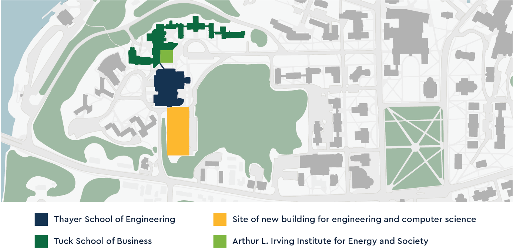

Expansion.
The world needs more of the type of bold thinkers that Thayer School produces.
Growth of engineering is a priority in the academic vision that President Phil Hanlon ’77 has forwarded for all of Dartmouth.
Expansion comes at a time of upward trajectory for Thayer School, including:
A new state-of-the-art building linked to MacLean Engineering Sciences Center will house both a growing Thayer School and Dartmouth’s Department of Computer Science, bringing together disciplines that share a language of increasing global importance: the language of technology.
Along with the Tuck School of Business and Dartmouth’s new Arthur L. Irving Institute for Energy and Society, the co-located Thayer School and Computer Science will transform the West End of the Dartmouth campus into an unrivaled center of integrated teaching, research, and entrepreneurship focused on solving global problems and improving the human condition.
Expanding Thayer School will allow us to:
“Our exciting vision ensures Dartmouth’s sustainable and long-lasting impact on the world,” says Thayer School Overseer Barry MacLean ’60 Th’61, who has donated $25 million—the largest gift in Thayer’s history—toward an additional engineering building and professorships.
“There are very few rewards in life as great as making a positive impact on the people, organizations, and world around us,” says Terry G. McGuire Th’82, chair of Thayer School’s Board of Overseers and leader of the expansion efforts.
“With the world on pace to see increasingly dramatic technology-driven change, we need more of the type of bold thinkers that the Thayer School produces,” says Dean Joseph J. Helble.

14 Engineering Drive, Hanover, NH 03755
(603) 646-2230
thayer.receptionist@dartmouth.edu